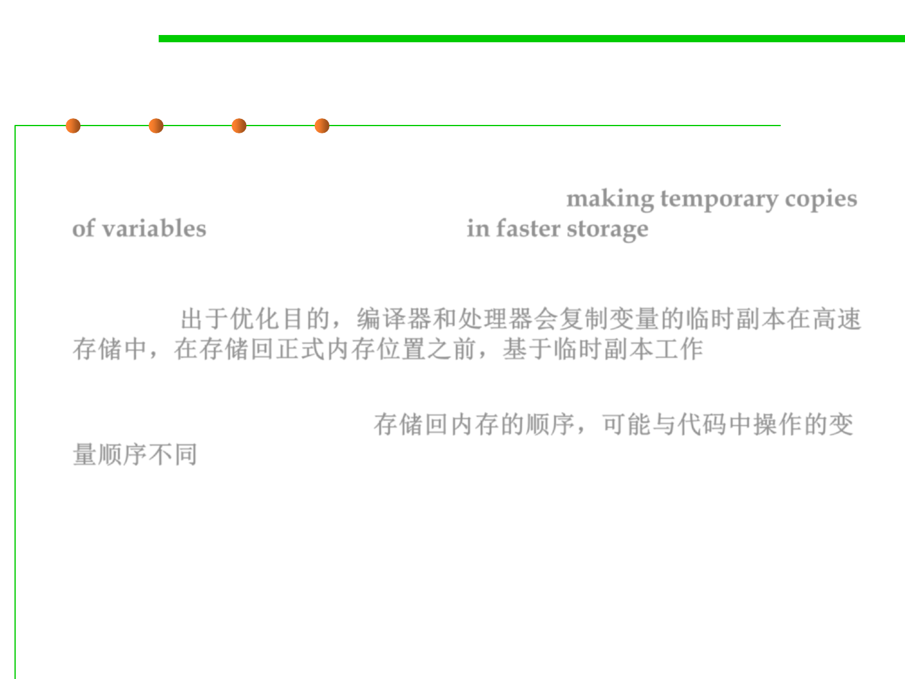

Reordering
10.1 Concurrency and Thread-Safety
▪ The problem is that modern compilers and processors do a lot of things
to make the code fast. One of those things is making temporary copies
of variables like answer and ready in faster storage (processor
registers, or processor caches), and working with them temporarily
before eventually storing them back to their official location in
memory. 出于优化目的，编译器和处理器会复制变量的临时副本在高速
存储中，在存储回正式内存位置之前，基于临时副本工作
▪ The storeback may occur in a different order than the variables were
manipulated in your code. 存储回内存的顺序，可能与代码中操作的变
量顺序不同